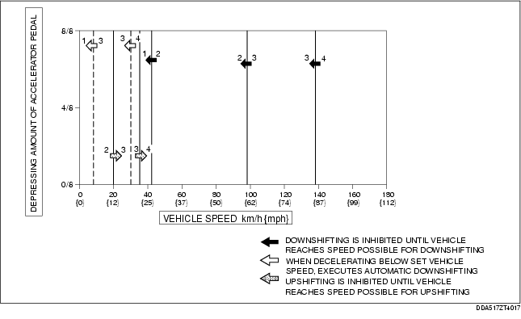

Manual mode shift control operation (sport AT) [FN4A-EL]
Manual mode shift
• When the selector lever is shifted over from the D to M range position, the M range switch in the selector lever component turns on, sending a manual mode command signal to the PCM which activates the manual mode shift control.
• When in manual mode and the selector lever is operated in the back (+) direction, the up switch in the selector lever component is turned on and an up-shift command signal is input to the PCM.
- - The PCM, triggered by the up-shift command signal, carries out shifting by outputting an operation signal to the shift solenoid if the ATF temperature is not low (for 3GR only), vehicle speed is higher than the set speed and the gear position is 3GR or lower.
• Conversely, when the selector lever is operated in the forward (-) direction, the down switch in the selector lever component turns on, and a down-shift command signal is input to the PCM.
- - The PCM, triggered by the down-shift command signal, carries out shifting by outputting an operation signal to the shift solenoid if the vehicle speed is less than the set speed and the gear position is 2GR or above.
• The PCM utilizes a specialized M range automatic shift diagram. Due to this, restriction of manual shift demand and automatic control of downshifting is carried out, reducing load on the ATX, preventing engine over-rev and ensuring drive stability.
Shift diagram
